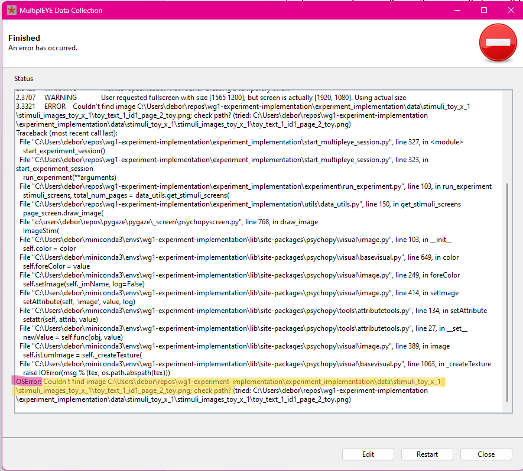
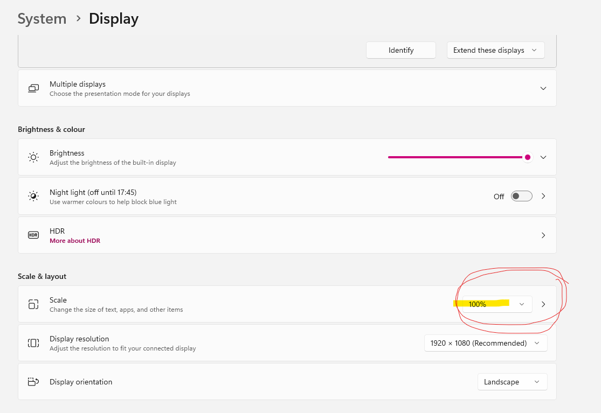
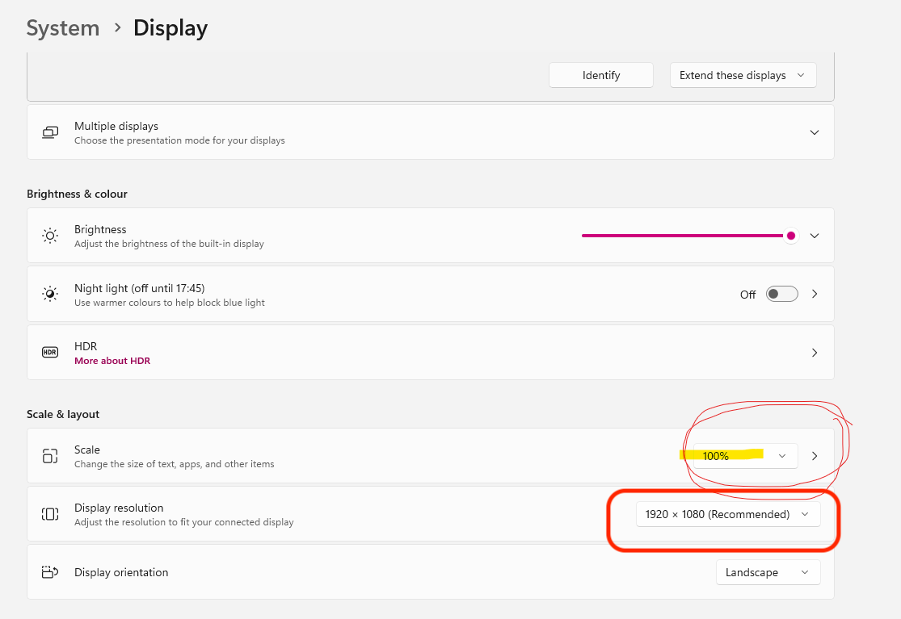
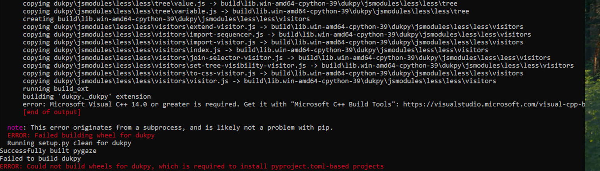

It is very likely that you will encounter multiple error during the set-up. Don't be discouraged, this is normal. The data collection involves many tiny details and oftentimes, something goes wrong. However, so far, we could install the experiment everywhere and there were no problems that could not been solved with a little patience.
Please note that whenever you encounter an error, please let us know (multipleye.project@gmail.com). Oftentimes the error has been encountered before and can be easily fixed. Please do not change the code. If the error tells you, for example, that you've entered a wrong value in the GUI you can try and fix it by entering the correct value. In any case: write down exactly what steps you took to fix the error and copy paste the output of the GUI window. This document should help you fix the error yourself, but don't hesitate to contact us if it does not work out.
How are errors displayed and how can you read them!
As soon as you start the experiment, a small window will show up with text written in it. See screenshot below
This text will show many experiment details that are not relevant but also the error message. Oftentimes, the error messages contain some useful information that can help you debug the issue. The screenshot below shows an example of an error message:

Marked in red is the error type. This is not very relevant for you. It describes the type of the error but if you are not familiar with different error types, it is not very helpful. Marked in yellow is the error message. This is the most important part of the error message. It tells you what went wrong. In this case the error message is very clear: it tells you that it cannot find a specific file and where it is looking for this file. For such a scenario we advise you to do the following: Manually follow the path in the error message and check whether the file is there. Please read the path carefully. Sometimes there are small mistakes in the path that can be easily overlooked. Most likely, the file will not be there if the error message says so. In that case you can let us know as the file might be missing for other labs as well.
Please follow the following steps when you encounter an error:
Please check whether you have all the files that are necessary. This includes the stimulus images as created by the experiment team and the participant questionnaire files (3 excel files).
Maybe there has been a change recently to the stimulus files in english. Please check the changelog in the MultiplEYE files and make sure that you have all changes reflected in the files in your language. Please write an email to multipleye.project@gmail.com if you don't know where to find the changelog. Important: there might be small changes such as a typo in a column name that has been fixed. Please compare the files carefully.
No such file or directoryIf this is in the error message, it means that the program cannot find the file specified. This can be due to different reasons. Some of them you can solve yourself, others not.
You can try to find out whether the file or folder the program is looking for is really not there.
If it seems to be there, sometimes, it is helpful to click edit on the interface and then check again that everything was entered correctly and then
click run again. Even if everything was entered correctly previously, sometimes it can help to simply restart the experiment.
When using the Windows built-in unzip function, you might encounter an error message that the path is too long to be unzipped. It does not unzip some of the files and you cannot access them. This can be solved by using something more advanced for unzipping, such as 7-zip. You can download it here. Or you can unzip it in a different computer, e.g. a Mac, and then copy the files to your computer.
If your presentation PC is a Windows machine it is possible that you have to adjust the display settings like in the screenshot below. Make sure that you select the display that you will run the experiment on! And then adjust the scaling to 100%. 
Another reason for blurry images is that the images were not adjusted to the resolution and size of your display. Please read the MultiplEYE guidelines on how to create the images adjusted to your display.
If you see this error message, it means that the image you are trying to display is too large for the screen. This can cause the texts exceed the tracking area and the calibration will not work correctly. It is possible that the image is too large because the display settings are not correct. Please adjust the display solution for the monitor you are using to the numbers you specified in the pre-registration form. e.g. 1920x1080 for our lab monitor. 
Another reason for larger images is that the resolution or the screen size of your monitor that you specified in the pre-registration form is not correct. Please check the resolution and the screen size of the monitor you are using and update these information to the MultiplEYE team.
First of all check that you followed the instructions in the INSTALL_PYLINK.html file. If you did not, please do so now.
If you did but you used the command to copy it via the commandline: please try and copy it manually.
If you copied it manually and confirm that the folder is in the right location, it could be that there are multiple versions
of anaconda installed on your computer. Please check whether this is the case and if so, delete both of them and
restart the process in the CONDA_ENVIRONMENT.html.

If you see this error message, it means that you do not have the necessary build tools installed on your computer.
As instructed in the error message, you can download the necessary build tools from the link provided, and then restart the process in the CONDA_ENVIRONMENT.html.
This error can have multiple reasons. If you know how to do this you can do the following:
pip list OR pip3 list(some people will ALWAYS have to use pip others pip3 also for the commands below.PyQt6 (e.g. PyQt6-Qt6).PyQt5. If so, deinstall is by running pip uninstall PyQt5. Repeat this for all names in the list that contain PyQt5.
b) if a) is not true, try deinstalling all packages that contain PyQt6 (see a) for how to do this) and instead install PyQt6==6.0.2, PyQt6-Qt6==6.0.2, PyQt6_sip==13.0.0, pyqt6-tools==6.0.2.3.2. You can install is by running
pip install PyQt6==6.0.2, then run pip install PyQt6-Qt6==6.0.2, etc. for all four packages listed before.This error occurs when the participant questionnaire file with the questions is not correctly formatted. It has helped in the past to copy the EN file again and add the entries in the other language again. You can also try and run it first with the EN file unchanged to see if this works. And then insert the entries in your language.